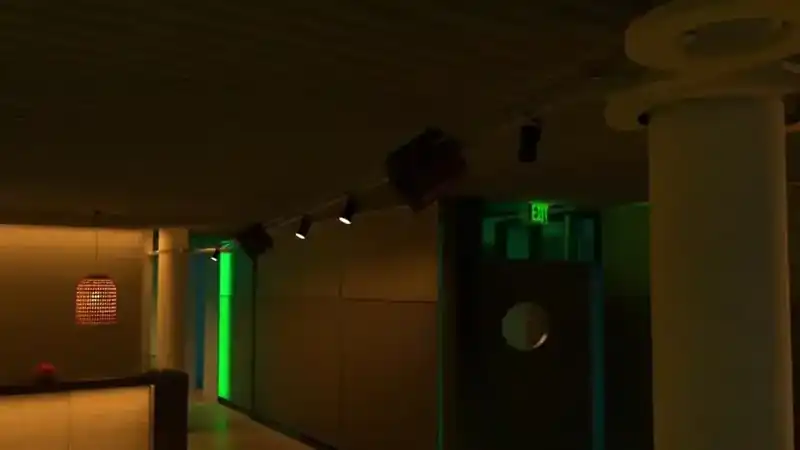
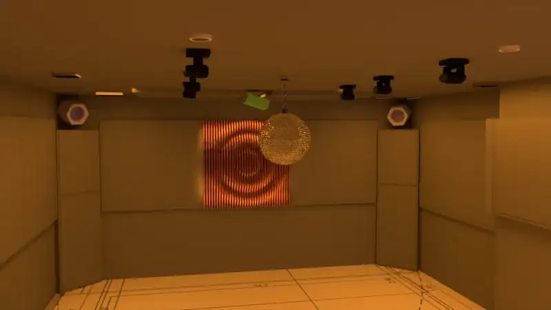
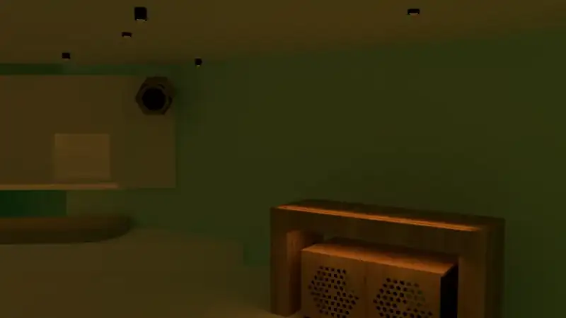
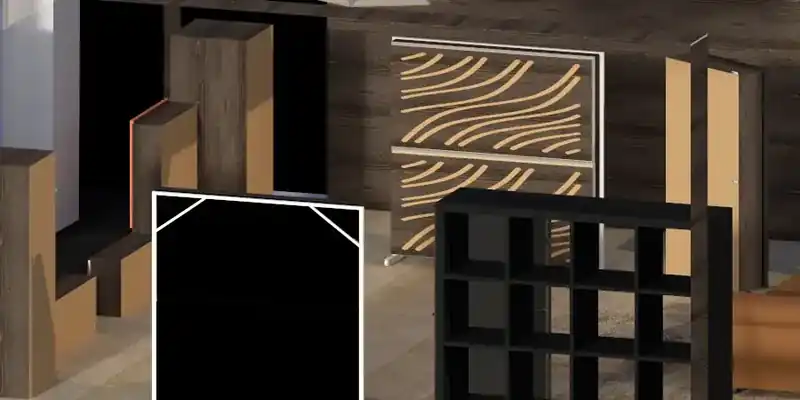

PROJECT ATLAS / 2026
Engineering
through built work.
A source-backed archive of acoustics, professional AV, KNX/DALI automation, CAD, custom fabrication, recording studios and technical documentation. Each case distinguishes what was designed, predicted, installed, commissioned or kept confidential.
01 / TECHNICAL CASES
One project at a time.
The archive is separated by project so each system, drawing set, acoustic decision and media master keeps its original context. Real user-supplied visuals are used where a public-safe derivative exists; otherwise the card remains documentary rather than inventing imagery.

USER-SUPPLIED PROJECT MEDIAMar Salada / Club del Mar
Integrated AV, acoustics, KNX/DALI, Gira X1, custom fabrication, CAD and commissioning.

USER-SUPPLIED FINAL RENDERCasa Alain
Private residential cinema: acoustics, cinema audio options, SketchUp, finishes and project video.

USER-SUPPLIED PROJECT RENDERCan Furnet Club
Box-in-box isolation, structural decoupling, HVAC silencers, acoustic doors, audio cabling and render development.
Playa Soleil / Bora Bora
Detailed cable books, loudspeaker zones, CAT6a, power coordination, CAD sections and acoustic / sonic models.
 USER-SUPPLIED STUDIO RENDER
USER-SUPPLIED STUDIO RENDERPrivate Production Studio
Phased acoustic development, CAD, SketchUp, diffuser reinforcement and critical-listening design.

USER-SUPPLIED V-RAY RENDERPrivate Producer Studio
First-reflection control, custom acoustic furniture, absorbent ceiling, CAD, SketchUp and V-Ray.
Acoustic Production Room
Room-mode diagnosis, bass absorption, diffusion, ceiling cloud and explicitly labelled RT60 predictions.
P08 · CONFIDENTIALPrivate Producer Acoustic Concept
Bilingual studio pre-design combining isolation, acoustic treatment, timber architecture, 3D and phased implementation.
02 / DIGITAL SYSTEMS
Software and operations.
The Project Atlas remains connected to the software and systems-engineering work in the main dossier.